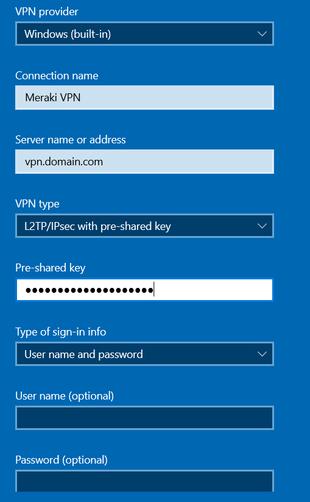
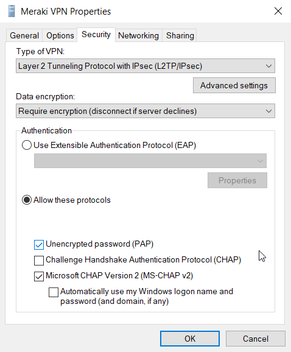

VPN Meraki et Windows 10
Un des avantages du VPN Meraki est qu'il ne nécessite pas de client de spécifique pour Windows. Le problème principal est que sa configuration nécessite quelques manipulations. Beaucoup de nos prestatiares rencontrent des difficultés pour s'y connecter et nous remontent régulièrement qu'ils ont des échecs de connexions avec le code …
Un des avantages du VPN Meraki est qu'il ne nécessite pas de client de spécifique pour Windows. Le problème principal est que sa configuration nécessite quelques manipulations. Beaucoup de nos prestatiares rencontrent des difficultés pour s'y connecter et nous remontent régulièrement qu'ils ont des échecs de connexions avec le code erreur 628, ou encore le message "The connection was terminated by the remote computer before it could be completed.". Voici donc comment configurer un VPN Meraki sous Windows 10. Avec en bonus, la configuration de la base de registre en cas d'erreur 809 qui apparait lorsque le client VPN se trouve derrière du NAT.
Configuration du client VPN L2TP
Dans les paramètres VPN de Windows 10, ajouter un nouveau VPN et y entrer les informations de connexion. Jusque là, rien de bien compliqué.
Ensuite, il faut se rendre dans les options d'adaptateurs (Change adapter options). Cela ouvre le Control Panel. Clique droit sur la connexion VPN concernée puis Propriété. Ici, dans l'onglet Securité, dans le second menu déroulant, il faut sélectionner "Require Encryption (Disconnect if server decline)". Puis, dans le partie Authentication, il faut cocher Allow these protocols puis 'Unencrypted password (PAP). Cette option n'envoie pas le mot de passe en clair sur le réseau. Celui ci transit par un canal chiffré entre le poste client et le MX Meraki.
Ensuite, il faut cliquer sur le bouton 'Advanced Settings' et entrer la PSK dans la fenêtre qui s'ouvre. On peut enfin valider le tout et se connecter au VPN. Si cela ne fonctionne pas, il est possible que ce soit une option de Windows dans la base de registre qui empêche la communication a travers les réseaux natés. Pour corriger cela, il faut ouvrir la base de registre en mode administrateur puis créer cette clé :
HKEY_LOCAL_MACHINE\SYSTEM\CurrentControlSet\Services\PolicyAgent Nom : AssumeUDPEncapsulationContextOnSendRule Type: DWORD Valeur: 2 Base: Decimal
Après un reboot, la connexion devrait fonctionner.